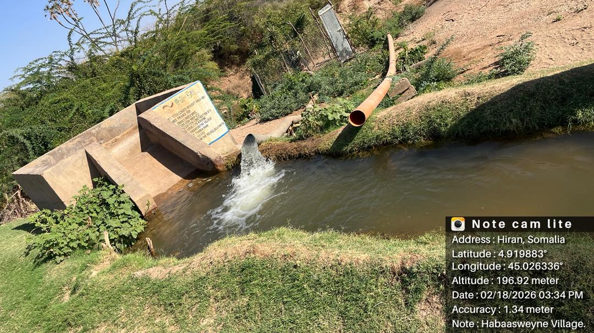

Research, Assessments & MEAL
Baselines, midterms, endlines, digital data collection (KoboToolbox/ODK), theories of change, and advanced analysis using SPSS, STATA, R, NVivo, and Power BI.
Explore MEAL practice →Peninsula Insights Consulting partners with NGOs, UN agencies, donor programmes, academic bodies, and public-sector actors to turn evidence, ideas, and field experience into practical solutions that improve programmes, strengthen systems, and sustain change.
From fragile, drought-affected settings to stable operating environments, we deliver evidence-based advisory across nine integrated domains.
Baselines, midterms, endlines, digital data collection (KoboToolbox/ODK), theories of change, and advanced analysis using SPSS, STATA, R, NVivo, and Power BI.
Explore MEAL practice →Institutional roadmaps, SWOT/PESTLE situational analysis, Theory of Change facilitation, capacity assessments, and risk-management frameworks.
Explore Strategy practice →Climate risk assessments, drought preparedness, water and soil conservation, solar irrigation systems, regreening, and livelihood diversification.
Explore Resilience practice →Value-chain mapping, fodder systems, VSLAs/MSMEs, market linkages, youth employment, and Cash Plus resilience initiatives.
Explore Livelihoods practice →GESI assessments, HRBA human-rights approaches, protection mainstreaming, safe participation, and women's economic leadership.
Explore Gender practice →Health systems strengthening, CMAM/IYCF nutrition surveys, water supply sustainability, child protection, and capacity building.
Explore Thematic practice →Documenting on-the-ground interventions: solar pumping systems, irrigation canal construction, soil erosion control, and livelihood support in Hiran, Somalia.

Ground-mounted solar photovoltaic array powering high-capacity water pumping directly into agricultural irrigation canals, providing continuous zero-emission power for local farming communities.

Concrete canal headworks and pressurized pipeline discharging fresh water into main distribution channels under the Climate-Resilient Food Systems initiative, securing reliable water downstream.

Mechanical contour earth bunding across farming acreage in Beledweyne, stopping valuable topsoil runoff, trapping seasonal rainwater, and restoring degraded agricultural land.
Every assignment begins with understanding the context, the client's questions, and what success looks like. We keep clients involved from inception to validation.
We consult clients and relevant stakeholders, clarify underlying needs, and recognize essential local knowledge and context.
We develop a realistic methodology, sampling strategy, workplan, and deliverables that respond directly to the Terms of Reference.
We apply sound research methods, rigorous data quality checks, ethical research practice, safeguarding, and transparent communication.
We present findings in accessible formats, facilitate validation and reflection workshops, and help teams operationalize recommendations.
We welcome feedback and use it systematically to strengthen the quality and long-term usefulness of our collective work.
We connect research with action. Our work is designed not simply to describe a challenge, but to help clients understand what can be done next.
Expertise spanning MEAL, public health, WASH, climate resilience, and livelihoods helps us see how all programme components fit together.
Our team has led evaluations and assessments across Somalia, Somaliland, Kenya, and the wider Sub-Saharan region.
We combine deep local understanding with sound scientific methods and recognized international standards (OECD-DAC, SPHERE, GESI).
We act honestly, protect information responsibly, and report findings objectively, fairly, and with care.
We plan carefully, apply recognized standards, and deliver work on time that clients can trust and use.
We value local knowledge, listen to diverse voices, and ensure women, youth, and marginalized groups are meaningfully heard.
We stay curious, adapt to changing contexts, and use appropriate digital tools (KoboToolbox, Power BI, SPSS, STATA, R).
Tell us about your upcoming evaluation, strategic plan, or programme challenge. We will reply within two working days to arrange a conversation.